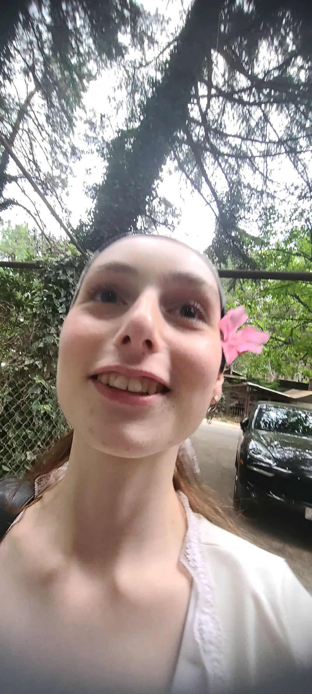
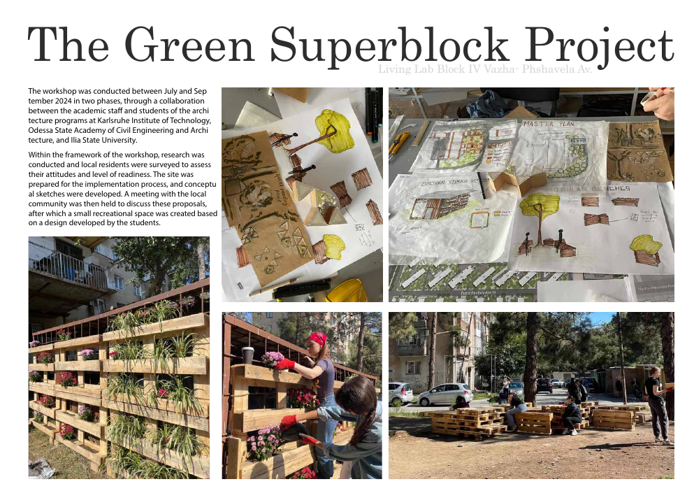
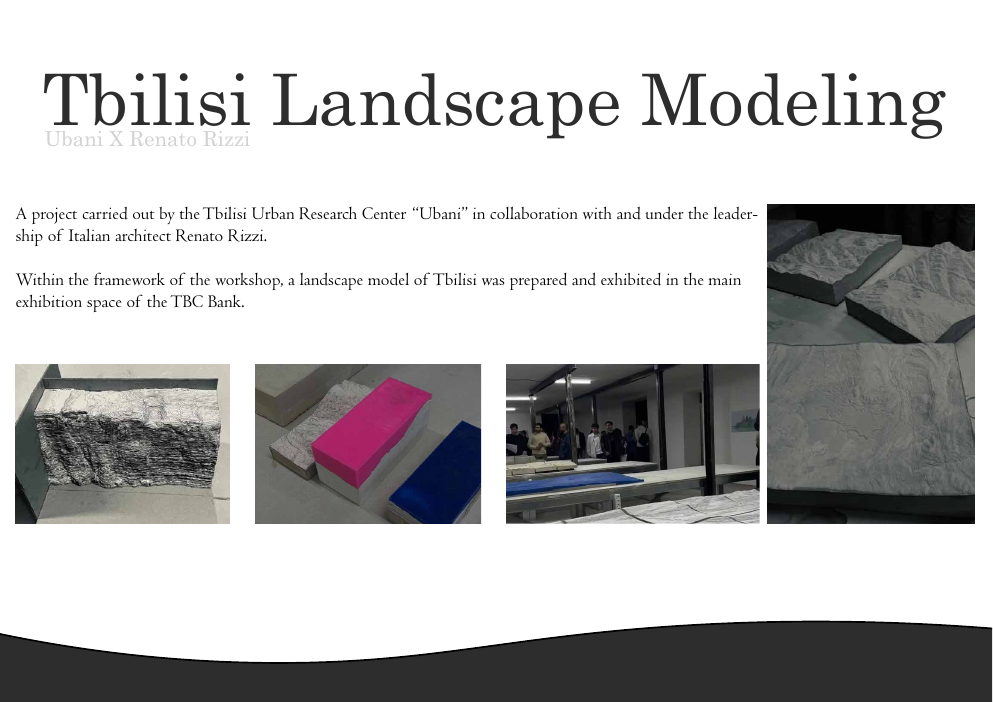
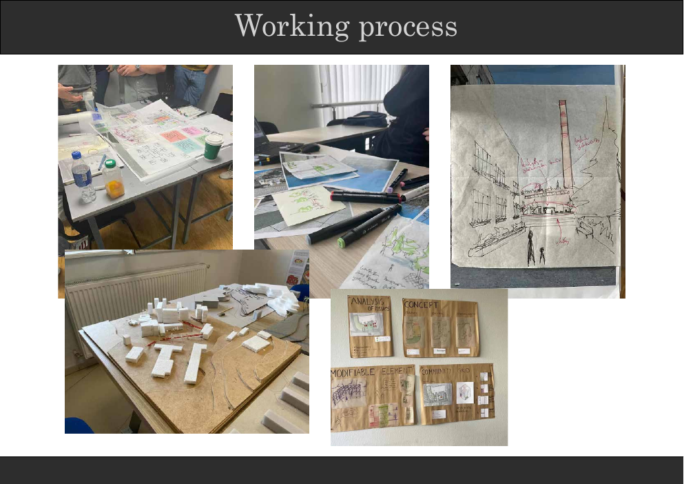

2021 — 2025
ილიას სახელმწიფო უნივერსიტეტი
არქიტექტურის საბაკალავრო პროგრამა

არქიტექტორი · თბილისი, საქართველო
ვქმნი ფუნქციურ, ესთეტიკურ და ადამიანზე ორიენტირებულ სივრცეებს — ანალიტიკური ხედვითა და დეტალებისადმი განსაკუთრებული ყურადღებით.
ჩემ შესახებ
ვარ არქიტექტორი და მაქვს ძლიერი ინტერესი არქიტექტურის, ურბანული დაგეგმარებისა და სივრცითი დიზაინის მიმართ. თითოეულ პროექტს ვუდგები პასუხისმგებლობით, ანალიტიკური აზროვნებითა და დეტალებისადმი განსაკუთრებული ყურადღებით.
მაქვს აკადემიური და პრაქტიკული გამოცდილება არქიტექტურულ პროექტებზე მუშაობის, ტექნიკური დოკუმენტაციის მომზადებისა და პროექტების კოორდინაციის მიმართულებით. ეფექტურად ვთანამშრომლობ როგორც გუნდთან, ისე დამოუკიდებლად.
საერთაშორისო გარემოში განვითარება და ხარისხიანი, მდგრადი არქიტექტურის შექმნაში საკუთარი წვლილის შეტანა.
განათლება
არქიტექტურის საბაკალავრო პროგრამა
კვლევა მოიცავდა თბილისის ინდუსტრიული და ისტორიული მნიშვნელობის ობიექტებს და მათთვის მრავალფუნქციური ადაპტური გამოყენების კონცეფციების შემუშავებას. პროექტის მიზანი იყო მიტოვებული ინდუსტრიული მემკვიდრეობის თანამედროვე ქალაქში ინტეგრირება — ისტორიული ღირებულების შენარჩუნებითა და ახალი საზოგადოებრივი ფუნქციების მინიჭებით.
არქიტექტურული პორტფოლიო
შერჩეული აკადემიური პროექტები აერთიანებს ადაპტურ გამოყენებას, საგანმანათლებლო სივრცეებსა და ადამიანზე ორიენტირებულ საცხოვრებელ გარემოს.
სრული პორტფოლიოს ნახვა ↗გამოცდილება
პროექტის კონცეფციიდან ტექნიკურ დოკუმენტაციამდე — პროცესის ყველა ეტაპზე ყურადღება ეთმობა სიცხადეს, თანამშრომლობასა და ხარისხს.
დამოუკიდებელი პრაქტიკა
სტაჟირება · საერთაშორისო პროექტები
ინსტრუმენტები და ენები
ციფრული ინსტრუმენტების ერთობლიობა კონცეფციის, მოდელირების, ვიზუალიზაციისა და პრეზენტაციისთვის.
CAD & BIM
ვიზუალიზაცია
Adobe
საოფისე პროგრამები
ენები
დამატებითი აქტივობები


ადამიანზე ორიენტირებული საჯარო სივრცეების, აქტიური მობილობისა და გარემოს ხარისხის გაუმჯობესებაზე დაფუძნებული საპროექტო წინადადებები.
ტერიტორიის ანალიზი, ლანდშაფტის მოდელირება და ბუნებრივი გარემოს არქიტექტურულ და ურბანულ პროექტებთან ინტეგრირება.
მდგრადი სატრანსპორტო სისტემები, ურბანული დაგეგმარება და ეკოლოგიური პრინციპების პრაქტიკაში გამოყენება.

როგორ ვმუშაობ
სამუშაო პროცესი იწყება ადგილისა და მომხმარებლის საჭიროებების გააზრებით, შემდეგ კი ვითარდება ხელით შესრულებული ესკიზების, ფიზიკური მაკეტებისა და ციფრული მოდელების მეშვეობით.
პროცესისა და სერტიფიკატების ნახვა ↗კონტაქტი
ღია ვარ ახალი შესაძლებლობებისთვის